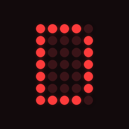

DotGlow Web Flasher
Install DotGlow on your board straight from the browser. Nothing to download or install.
This browser can't flash boards. Open this page in Google Chrome or Microsoft Edge
on a Windows, Mac, Linux or Chromebook computer. Firefox, Safari and phone browsers don't support it.
On a phone, use the DotGlow app instead (Install firmware).
ESP32ESP32-S3 and ESP32 DevKit
DotGlow with Bluetooth, set up and controlled from the Android app.
ESP8266NodeMCU and Wemos D1 mini
The Matrix Clock for ESP8266: WiFi clock set up from its own web page (no Bluetooth).
How it works
- Plug the board into the computer with a USB data cable (some cables only charge). Take the display's 5 V wire off the board while flashing.
- Press Install, pick the board's port in the list (named
USB Serial,CH340,CP210xorUSB JTAG/serial) and press Connect. - Choose Install again. It takes about a minute: don't unplug the board until it says it's done. Tick Erase device only for a board that behaves strangely.
- Open the DotGlow app, set up the clock's WiFi and enjoy. A new install shows a 6-digit pairing PIN on the display.
Problems?
No port in the list, or the board isn't found
- Use a USB data cable and another USB port.
- Boards with a CH340 or CP210x chip may need their USB driver (search for "CH340 driver" / "CP210x driver").
- Hold the BOOT button while you plug the board in, then try again.
"Failed to initialize" or it stops half way
- Take every wire off the board (especially the display's 5 V) and use a short, thick cable.
- Hold BOOT, press RESET once, release BOOT, then press Install.
- Close other programs that use the port (Arduino IDE, PlatformIO monitor).
Does this erase my WiFi settings?
- Yes: a full install resets WiFi, pairing and settings. To keep them, update from the DotGlow app (Updates) or use the PC flasher's "keep settings" option.
Is it safe? What does it install?
- The firmware files are on this website (manifest) and come from the open DotGlow firmware project. Flashing happens in your browser; nothing is uploaded.